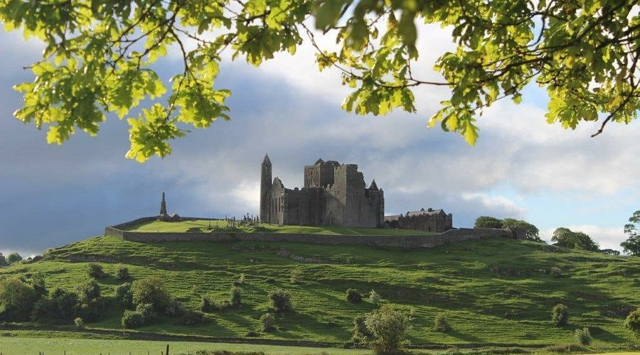

Blog page Welcome to the blog page! Here you'll find the latest updates and stories about my journey through Ireland.
The National Museum of Ireland - Archaeology The National Museum of Ireland – Archaeology is located on Kildare Street in Dublin, and I think it’s a must if you're interested in...
Guinness Storehouse The Guinness Storehouse is a very popular attraction in Dublin, and after visiting it, I understand why!...
Cliffs of Moher The Cliffs of Moher are beautiful sea cliffs located on the west coast of County Clare. The cliffs run for 14km from Doolin in the north to...
 Rock of Cashel The Rock of Cashel, also known as Cashel of the kings and St. Patrick’s Rock, is a historical site with medieval buildings. It’s located at...
School system in Ireland The Irish school system is pretty different from what I’m used to in Norway. First of all, kids in Ireland start school a bit earlier then...
Jeanie Johnston and the Great Famine The Great Irish Famine is one of the darkest and most depressing periods of time for the irish population...